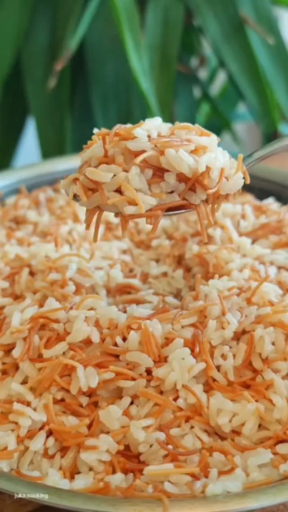

Butterreis mit gerösteten Suppennudeln
Locker, buttrig und voller Aroma – dieser Reis gelingt einfach immer! Der Geheimtipp? Goldbraun geröstete Suppennudeln, Butter und das perfekte Verhältnis von Reis zu Wasser.
- 6 Zutaten
- 7 Schritte
Zur Zubereitung Video ansehen ↗
Zutaten
Zubereitung
- Reis gründlich waschen, bis das Wasser klar ist.
- Optional 1–2 Stunden in heißem Wasser einweichen.
- Suppennudeln im Öl goldbraun rösten.
- Reis und Butter dazugeben und kurz mitrösten.
- Wasser und Salz hinzufügen und aufkochen lassen.
- Hitze reduzieren, Deckel aufsetzen und 15–20 Minuten garen.
- Ein Küchentuch oder Küchenpapier unter den Deckel legen und den Reis 10 Minuten ruhen lassen.
Tipp: Unglaublich locker, aromatisch und die perfekte Beilage zu Fleisch, Gemüse oder Saucengerichten!